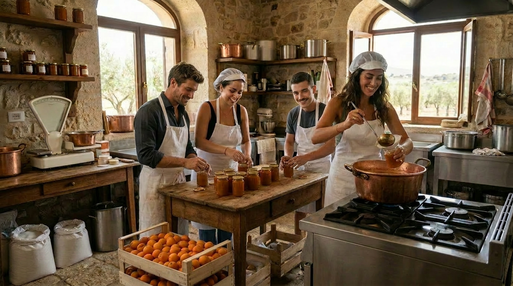
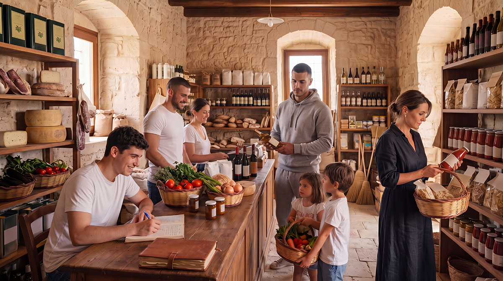
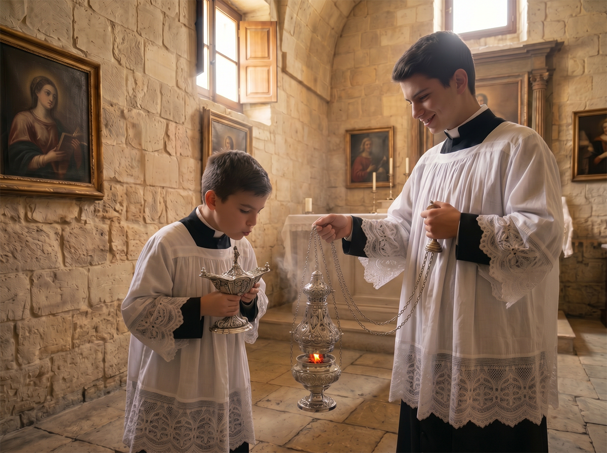

Living at Baglio San Michele means choosing a slower, more conscious rhythm, in which the care of relationships, contact with the land and the transmission of values between generations become an integral part of daily life. It is not an isolated life, but a balanced coexistence between intimacy and community dimension.
Baglio San Michele welcomes two complementary ways of life: young single people in formation, who live in simple cells and share large common spaces, and families, who live in autonomous apartments with their own privacy and, where possible, a small garden. Both sections contribute to the same community, under the responsibility of the Chapter of the Wise, each according to the needs of their season of life.
Discover in detail the organisation of community life and the two sections of the Baglio →
The rhythm of daily life

Life at Baglio San Michele follows a rhythm marked by the times of the land and the care of relationships. Days begin early, with the sounds of the countryside and the scent of bread or coffee prepared at home. Many residents choose to work remotely or dedicate themselves to artisanal and agricultural activities, alternating moments of individual commitment with time dedicated to family and community life.
Meals play a central role. They are not only a moment of nourishment, but of encounter. People often eat together in the courtyard or in common spaces, especially on weekends and summer evenings. Products from the vegetable garden, the olive grove and neighbouring farms naturally enter the kitchen of every household, favouring a simple, seasonal diet connected to the territory.
The management of spaces and community life

Every household has its own private dwelling (apartment or cell), designed to guarantee intimacy and tranquillity. At the same time, the Baglio offers shared spaces — such as the courtyard, the common kitchen, the chapel and green areas — that become places of natural encounter.
The care of common spaces is everyone's responsibility. There is no “service staff”: it is the residents themselves, according to shifts or agreements, who take care of ordinary maintenance, the preparation of some events and the daily management of shared environments. This model strengthens the sense of shared responsibility and reduces management costs.
Education and children's growth

Children grow up in an environment where nature, intergenerational relationships and contact with manual work are part of daily life. There is no structured internal school, but an educational approach is favoured that integrates formal learning with direct experience: the vegetable garden, animal care, participation in festivals and seasonal work, contact with artisans and farmers of the territory.
Families support each other in organising activities for children and in mutual help during the busiest periods. The presence of elderly people and adults with different trades offers the youngest a rich context of stimuli and role models.
Work, trades and productive activities

Many residents work remotely, taking advantage of the available connectivity and spaces dedicated to study and individual work. Others dedicate themselves to activities related to the land, craftsmanship or the processing of local products.
The Baglio encourages the birth of small internal productive activities or in collaboration with companies in the territory (beekeeping, horticulture, food processing, craftsmanship). The goal is not profit maximisation, but the creation of a mixed, dignified economy consistent with the rhythms of community life.
Economy of reciprocity and autonomy

At Baglio San Michele community life is based on a model of concrete reciprocity, inspired by Sicilian tradition and Christian values of sharing and mutual responsibility.
The Community Cooperative buys quality food products and basic necessities in bulk, storing them in the historic warehouses of the masseria. These goods are then made available to members – the residents – without any mark-up. Everyone decides whether to take advantage of this opportunity or to shop wherever they prefer.
Products from the Baglio's agricultural, livestock and artisanal production (biodynamic gardens, traditional farming, food processing) follow the same principle of fair and accessible distribution.
An internal credit system allows each community member to accumulate value through hours of community work, services rendered or artisanal and agricultural activities, which can be spent on goods and services within the Borgo. In this way the economy becomes an instrument of reciprocity and of valuing everyone's contribution, while at the same time strengthening food autonomy and cohesion.
This model reduces the costs of daily life, supports short and local supply chains and helps build a stable, serene and rooted community, fully in tune with the spirit of Sicilian Slow Living.
Decisions, rules and conflict management

Decisions concerning community life are made through structured moments of confrontation, in respect of the principles of subsidiarity and participation. There are clear rules, shared from the beginning, concerning the use of spaces, respect for silence, animal care and waste management.
When tensions or disagreements arise, direct dialogue is privileged and, when necessary, confrontation in the presence of internal mediation figures within the community. The goal is not to avoid conflicts, but to manage them in a mature and constructive way, as a natural part of living together.
Traditions, festivals and cultural transmission

The calendar of the year is marked by strong moments: the Feast of Saint Michael, celebrations linked to the harvest, Christmas, Easter and other occasions linked to Sicilian and Christian tradition. These occasions are not only social events, but moments in which the sense of belonging is renewed and the value of memory, faith and conviviality is transmitted to new generations.
Even daily gestures — the preparation of bread, the care of the vegetable garden, the blessing of the table — become occasions to transmit values and habits that would otherwise risk being lost.
Balance between privacy and community life

One of the most delicate aspects of life at the Baglio is the right balance between the need for intimacy and the community dimension. It is not a life of continuous “communal living”, but a coexistence in which everyone can choose when to participate and when to withdraw into their own home.
Those who choose the Baglio generally appreciate the relational dimension without giving up their own autonomy. Respect for privacy is a central value: the Baglio's rules guarantee each person the space needed to live serenely, without pressure or obligations of continuous participation. Everyone can freely decide when and how to get involved in community life, maintaining their own rhythm and intimacy.
Living and Staying are two distinct ways of entering into relationship with the Baglio. Those who live here choose a stable residence, with community commitment and rootedness. Those who stay can instead experience for a limited period (weeks or months) the atmosphere and rhythms of the place, without committing to a definitive entry.
Want to learn more or begin the journey?
If this atmosphere resonates with you, you can explore the organisation of community life, the profiles we are looking for and the path of entry.